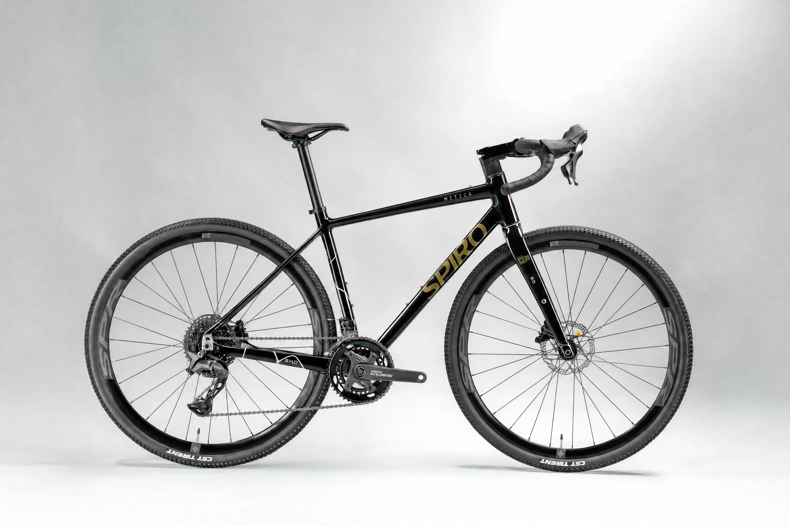
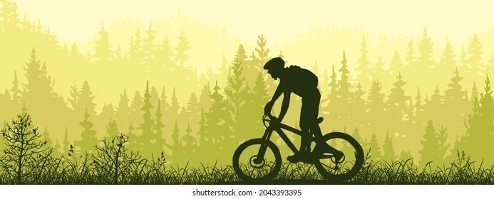
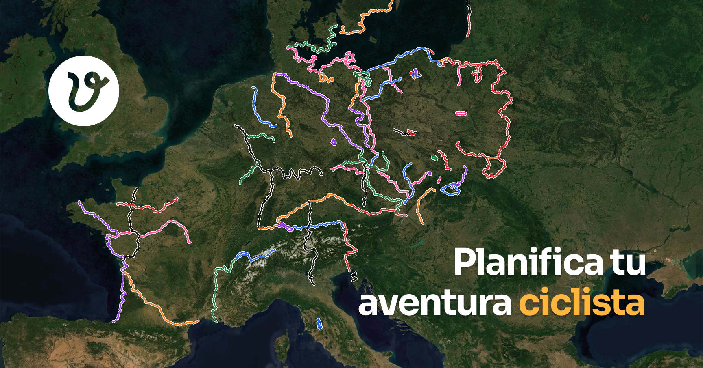

Alquiler de bicicletas urbanas
Recorre la ciudad a tu ritmo con una bicicleta cómoda y lista para salir. Incluye casco y candado para que disfrutes con más tranquilidad; es una opción ideal para paseos espontáneos.


Somos una empresa dedicada al alquiler de bicicletas en Medellín, con el objetivo de promover el uso de medios de transporte sostenibles y ecológicos. Visítanos y comienza tu recorrido
Recorre la ciudad a tu ritmo con una bicicleta cómoda y lista para salir. Incluye casco y candado para que disfrutes con más tranquilidad; es una opción ideal para paseos espontáneos.

Descubre rincones y caminos recomendados en compañía de un guía local. La ruta se adapta al ritmo del grupo, así que puedes centrarte en disfrutar del paisaje.

Organizamos alquileres para familias, amistades y equipos. Cuéntanos cuántas bicicletas necesitas y te ayudaremos con la planificación; reservar con antelación facilita la coordinación.
Estamos en el centro de la ciudad. Consulta nuestra ubicación en el mapa o escríbenos a hola@ruedalibre.example.